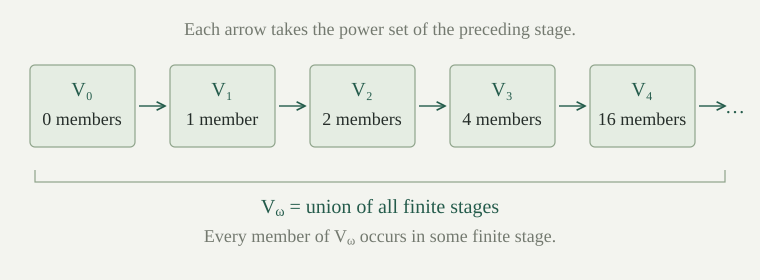

Begin with no sets, form all subsets of what is available, and repeat. After infinitely many steps, take the union of the stages already constructed and continue. Ordinals index this process, giving a set \(V_\alpha\) at each stage \(\alpha\). The resulting cumulative hierarchy contains every set somewhere.
We work in ZF, including Foundation, without assuming Choice. We use transfinite induction, Power Set, Replacement, and the membership rank of a set. The recursion argument below allows values that are sets without requiring a fixed set of possible outputs.
Suppose a formula with fixed set parameters specifies exactly one set \(H(\beta,h)\) whenever \(\beta\) is an ordinal and \(h\) is a set function with domain \(\beta\). For every ordinal \(\theta\), there is a unique set function \(f_\theta\) on \(\theta\) satisfying
The functions agree on overlapping domains. Consequently \(F(\beta)=f_{\beta+1}(\beta)\) is a definable class function satisfying the same rule at every ordinal. A class function here is a formula specifying a unique output, as in the sets-and-classes convention; it is not a set of all its pairs.
Proof
Call a function on an ordinal an approximation if it satisfies the rule there. Two approximations agree on their common domain: at a least disagreement \(\beta\), their restrictions to \(\beta\) agree, so the rule specifies the same next value. Restrictions of approximations are again approximations.
For existence, use transfinite induction on the domain. The empty function works at zero. At a successor \(\gamma+1\), extend the unique approximation \(h\) on \(\gamma\) by the pair \((\gamma,H(\gamma,h))\). At a nonzero limit \(\lambda\), the induction hypothesis and uniqueness specify exactly one approximation on each \(\gamma<\lambda\). Replacement collects these graphs into a set. Their union is a function on \(\lambda\), by compatibility. For \(\beta<\lambda\), it agrees with the approximation on \(\beta+1<\lambda\), so its equation at \(\beta\) holds.
This proves existence and uniqueness on every set ordinal. Compatibility then gives \(F\mathbin{\upharpoonright}\beta=f_\beta\); Replacement makes this restriction a set function. Thus the class rule holds as well. At no step did we collect all approximations over all ordinals into a set. □
Unlike recursion into a fixed value set, this theorem can repeatedly apply Power Set without knowing a bound on the values in advance.
Define the stages by
For a history \(h\) on \(\alpha\), the rule returns \(\varnothing\) at zero, \(\mathcal P(h(\beta))\) when \(\alpha=\beta+1\), and \(\bigcup\operatorname{ran}(h)\) at a nonzero limit. Each is a uniquely specified set for every history, so applies. At limits, Replacement collects the earlier stages and Union forms their union.
Write \(V=\{x:\exists\alpha\text{ an ordinal},\ x\in V_\alpha\}\). This notation defines a class. It does not assert that there is a set containing all stages or all sets.
Each \(V_\alpha\) is transitive, and \(\alpha\le\beta\) implies \(V_\alpha\subseteq V_\beta\).
Proof
If \(T\) is transitive, every \(x\in T\) satisfies \(x\subseteq T\), hence \(T\subseteq\mathcal P(T)\). Moreover \(\mathcal P(T)\) is transitive: if \(x\subseteq T\) and \(y\in x\), then \(y\in T\), so \(y\subseteq T\) and \(y\in\mathcal P(T)\). A union of transitive sets is transitive, since a member of one constituent has all its members in that constituent.
Transfinite induction now proves both assertions. Zero is immediate. At a successor, transitivity follows from the power-set observation, and \(V_\gamma\subseteq V_{\gamma+1}\) retains every earlier stage. At a limit, the union is transitive and contains every earlier stage. Equality of indices gives equality of stages, completing the non-strict inclusion claim. □
For every set \(x\) and ordinal \(\alpha\),
Proof
Use transfinite induction on \(\alpha\), proving the equivalence for all \(x\) together. At zero, neither side holds. At a successor, the induction hypothesis and the rank equation give
Here \(\rho<\beta\) is equivalent to \(\rho+1\le\beta\), and a supremum is at most \(\beta\) exactly when all its terms are. These statements include the empty family and \(\beta=0\).
At a nonzero limit \(\lambda\), membership in the union means membership in some \(V_\beta\) with \(\beta<\lambda\), hence rank below \(\lambda\). Conversely, if \(\rho=\operatorname{rank}(x)<\lambda\), then \(\rho+1<\lambda\), since \(\lambda\) is a limit. The induction hypothesis puts \(x\) in \(V_{\rho+1}\), one of the stages in the union. □
Every set \(x\) belongs to \(V_{\operatorname{rank}(x)+1}\), and this is its least membership stage. Also, for every ordinal \(\alpha\),
Proof
The first assertion follows from \eqref{eq:stage-rank}, because the least ordinal strictly above \(\operatorname{rank}(x)\) is its successor. For the second, \(x\subseteq V_\alpha\) means that every \(y\in x\) has rank below \(\alpha\). This is equivalent to every \(\operatorname{rank}(y)+1\) being at most \(\alpha\), hence to their supremum being at most \(\alpha\). □
Thus rank is the first stage that contains \(x\) as a subset; the next stage first contains it as a member. Foundation enters through the existence of membership rank for every set. The class \(V\) is therefore the class of all sets, which cannot be a set.
For every ordinal \(\alpha\),
The last equality abbreviates the set \(\{\beta\in V_\alpha:\beta\text{ is an ordinal}\}\); it does not intersect two sets when one is a proper class.
Proof
The inclusion \(V_\alpha\subseteq V_\alpha\) puts \(V_\alpha\) in its power set, whereas Foundation gives \(V_\alpha\notin V_\alpha\). The subset characterization bounds its rank by \(\alpha\). Every \(\beta<\alpha\) has rank \(\beta\), so \eqref{eq:stage-rank} puts it in \(V_\alpha\). The rank equation therefore bounds \(\operatorname{rank}(V_\alpha)\) below by \(\sup_{\beta<\alpha}(\beta+1)=\alpha\). This proves the rank equality, including zero. Applying \eqref{eq:stage-rank} to ordinals also proves the last equality. □
In particular, \(V_\alpha\subsetneq V_\beta\) whenever \(\alpha<\beta\): the set \(V_\alpha\) itself is already a member of \(V_{\alpha+1}\subseteq V_\beta\), but not of \(V_\alpha\).
Put \(0=\varnothing\) and \(1=\{0\}\). Then
Every finite stage is finite. If \(v_n=|V_n|\), then \(v_0=0\) and \(v_{n+1}=2^{v_n}\), giving \(0,1,2,4,16,65536,\ldots\).
Proof
The displayed sets follow by taking successive power sets. A finite set with \(m\) members has \(2^m\) subsets: fix its finite enumeration and encode a subset by its \(m\) binary membership choices. Induction on \(m\) doubles the number of such strings at each added position. Applying this to \(V_n\) proves finiteness and the recurrence. □

A set \(x\) is hereditarily finite if \(\operatorname{TC}(\{x\})\) is finite: only finitely many sets occur when we include \(x\), its members, their members, and so on. Then
Proof
The first equivalence is \eqref{eq:stage-rank}. If \(x\in V_\omega\), it belongs to some finite stage \(V_n\). That stage is transitive and finite. Since \(\{x\}\subseteq V_n\), leastness of transitive closure gives \(\operatorname{TC}(\{x\})\subseteq V_n\), so the closure is finite.
Conversely, let \(T=\operatorname{TC}(\{x\})\) be finite. Use membership induction on \(T\) to prove that every \(y\in T\) has finite rank. All members of \(y\) lie in \(T\), and there are finitely many of them. By the induction hypothesis their ranks are natural numbers. Their successor ranks have a finite maximum, or supremum zero if there are no members. The rank equation therefore gives a natural-number rank for \(y\). In particular \(x\) has finite rank. □
These are exactly the sets built from the empty set by finitely many layers of finite set formation. Although every member of \(V_\omega\) is finite, \(V_\omega\) itself is infinite: it contains every finite ordinal.
Find the least membership stages of \(\omega\), \(\{\omega\}\), and \(V_\omega\). Which of these sets are finite or hereditarily finite?
Their ranks are \(\omega\), \(\omega+1\), and \(\omega\), respectively. Thus their least membership stages are \(V_{\omega+1}\), \(V_{\omega+2}\), and \(V_{\omega+1}\). None belongs to \(V_\omega\), so none is hereditarily finite. The singleton \(\{\omega\}\) is finite, but its membership descendants include every natural number. Both \(\omega\) and \(V_\omega\) are infinite.
If \(x\in V_\alpha\), then every subset of \(x\) and \(\bigcup x\) also belong to \(V_\alpha\). If \(x,y\in V_\alpha\), then \(\{x,y\}\in V_{\alpha+1}\) and \(\mathcal P(x)\in V_{\alpha+1}\). At a nonzero limit \(\lambda\), pairs and power sets of members of \(V_\lambda\) stay in \(V_\lambda\).
Proof
For \(u\subseteq x\), rank monotonicity gives \(\operatorname{rank}(u)\le\operatorname{rank}(x)<\alpha\). Also, the union formula gives \(\operatorname{rank}(\bigcup x)\le\operatorname{rank}(x)\). Apply \eqref{eq:stage-rank} to both. For the pair and power set, their ranks are \(\max(\operatorname{rank}(x),\operatorname{rank}(y))+1\) and \(\operatorname{rank}(x)+1\). These are at most \(\alpha\), hence below \(\alpha+1\). If \(\alpha=\lambda\) is a limit, the successor of each ordinal below \(\lambda\) is still below \(\lambda\), proving the stronger assertion. □
These are closure statements about sets and operations. They do not assert that a stage satisfies ZF or another axiom system. Such assertions require a separate account of formulas and their interpretation in structures.
Work for this block with the axioms of ZF except Foundation, and do not assume Choice. The assertion that every set belongs to some \(V_\alpha\) is equivalent to Foundation.
Proof
Construct the stages using . Its proof uses well-foundedness of ordinal order, not Foundation for arbitrary sets. The proof of likewise needs no Foundation. We can therefore use the stages, their defining equations, and their transitivity and inclusion properties under the present weaker assumptions.
Suppose every set belongs to a stage, and let \(A\) be nonempty. There is a stage meeting \(A\), since any one \(a\in A\) belongs to some stage. Choose the least ordinal \(\alpha\) with \(A\cap V_\alpha\ne\varnothing\), by searching among ordinals at most such a witness. It is not zero. It cannot be a limit, because membership in a limit stage comes from an earlier stage. Thus \(\alpha=\beta+1\). For \(a\in A\cap V_{\beta+1}\), we have \(a\subseteq V_\beta\), while \(A\cap V_\beta=\varnothing\). Hence \(a\cap A=\varnothing\), which is Foundation.
Conversely, Foundation gives membership rank for every set, and places it in the stage just above its rank. □
Equivalently, Foundation says that every set has an ordinal membership rank satisfying \(\operatorname{rank}(x)=\sup_{y\in x}(\operatorname{rank}(y)+1)\). For the reverse implication, take a member of any nonempty \(A\) with least rank, using Replacement to collect the ranks. If it had a member in \(A\), that member would have smaller rank, a contradiction. Here “rank” includes the membership equation; an arbitrary assignment of ordinal labels would not suffice.
Work again in ZF, including Foundation. For a set \(A\), let \(\rho_A\) be the least rank of a set bijective with \(A\). This least rank exists: \(A\) itself is a witness, so Separation on \(\operatorname{rank}(A)+1\) gives a nonempty set of candidate ranks. Define its Scott cardinal by
This is a nonempty set by Separation and . It contains all representatives of the smallest possible rank, so no one representative is chosen. This construction is called Scott's trick.
Sets \(A,B\) are bijective exactly when \(\operatorname{sc}(A)=\operatorname{sc}(B)\). A bijection makes their rank candidates and least-rank representatives identical. Conversely, a member of their common nonempty Scott cardinal is bijective with both sets, and composing bijections identifies \(A\) with \(B\).
Consequently, the comparison \(\operatorname{sc}(A)\le\operatorname{sc}(B)\) can mean that \(A\) injects into \(B\), and sums, products, and powers can be represented by \(\operatorname{sc}(A\sqcup B)\), \(\operatorname{sc}(A\times B)\), and \(\operatorname{sc}(A^B)\). The explicit relabeling bijections prove independence of the representatives in ZF. Scott cardinals need not be ordinals, and this construction does not make every pair comparable or every infinite square equal to its factor.